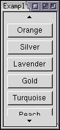

Scrolling Menus
This section will describe scrolling menus and how to use the mechanism with other elements.
Creating a Large Menu
You might wonder what happens if you create a menu with a lot of commands on it, such that all the items won't fit on the screen at once. Mozilla will provide a scrolling mechanism that will allow you to scroll through the items.
 If the available space is too small, arrows will appear on each end of the menu. If you move the mouse over the arrows, the menu will scroll up and down. If the available space is large enough, the arrows will not appear. Note that the exact behavior of the scrolling will depend on the current theme.
This behavior is automatic. You do not have to do anything in order to get scrolling menus. It will apply to menus on menubars, in popups or menulists. It is implemented using an arrowscrollbox element. This element can be used to create a scrolling box with arrows.
The arrowscrollbox can be used anywhere a regular box can be used. You don't have to use it in menus. It is always a vertical box and may contain any elements inside it. You could use it to implement a list when you don't want it to be a drop-down.
The following example shows how to create a scrolling list of buttons (you will need to resize the window to see the arrow buttons):
Example 5.5.1: Source View<arrowscrollbox orient="vertical" flex="1"> <button label="Red"/> <button label="Blue"/> <button label="Green"/> <button label="Yellow"/> <button label="Orange"/> <button label="Silver"/> <button label="Lavender"/> <button label="Gold"/> <button label="Turquoise"/> <button label="Peach"/> <button label="Maroon"/> <button label="Black"/> </arrowscrollbox>
If you try this example, it will first open at full size. However, if you shrink the height of the window, the scroll arrows will appear. Making the window larger again will cause the arrows to disappear.
You can set a CSS max-height property on the arrowscrollbox to limit the size of the scrolling box and thus make the arrows appear all the time.
The arrowscrollbox is mainly useful in menus and popups however.
(Next) Next, we'll see how to add some event handlers to XUL elements.
Examples: 5.5.1